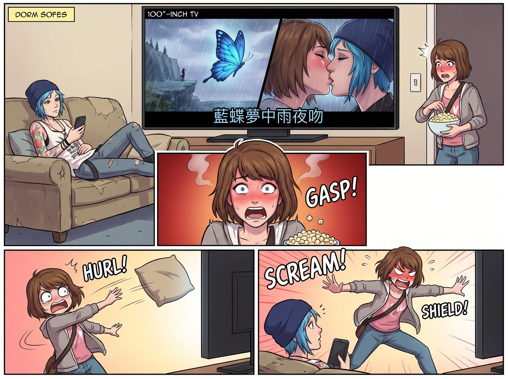

意外投屏事件

一、AirPlay 的意外
宿舍客廳裡,Chloe 窩在沙發上,隨手把手機投屏到電視大螢幕上,想放點音樂當背景——結果歌單無縫切換到了那首粵語同人曲,MV 毫無預警地佔滿了整面百寸螢幕。
粵語旋律響起的同時,螢幕上滾動著歌詞,畫面直白地閃過懸崖邊的暴雨、藍蝴蝶振翅的慢動作特寫,緊接著,是一段兩人在雨中深吻的畫面。
二、Max 的物理封印
Max 剛端著爆米花走過來,一抬頭就看到電視上赫然放著自己和 Chloe 的雨中深吻,整個人臉頰瞬間爆紅到快要冒煙。
她發出一聲驚恐的倒抽氣聲,手裡的抱枕直接像飛盤一樣朝電視砸過去,隨後整個人撲上前,肉身擋在螢幕前,對著沙發上的 Chloe 尖叫。
「Chloe!」她的聲音幾乎破音,「快斷開連接!把藍牙關掉啊啊啊!」
三、從得意到狂笑
Chloe 嘴裡叼著辣牛肉條,原本只是想放點歌當背景音,看到這整個同人剪輯 MV 被投了出來,先是愣了兩秒。
隨後,她看清電視上那句字幕——「就算世界沉沒,仍想護你一次」——立刻翹起二郎腿靠在沙發上,吹了聲響亮的口哨,肆無忌憚地狂笑起來。
「哇喔,Maxine,看看這個!」她指著螢幕,語氣裡帶著毫不掩飾的得意,「這是哪位遠東的狂熱信徒,給我們寫的史詩情歌?詞寫得挺硬核啊——『掀起滔天暗示』,老娘喜歡這句!」
四、Kate 的聖潔震撼
坐在一旁的 Kate,雖然聽不懂粵語,但螢幕上的英文字幕,配合那段哀傷又堅定的旋律,還有畫面裡反覆出現的葬禮、停滯的懷錶、暴風雨中緊緊相握的雙手,還是深深觸動了她。
她雙手捧著茶杯,安靜地看著電視,眼眶漸漸泛紅。
「Max……」她的聲音有點發澀,轉頭看向滿臉通紅的 Max,「雖然我不完全懂裡面的語言,但這首歌裡有一種跨越時間的沉重感……它聽起來,像是一場為愛對抗命運的禱告。」
說著說著,她的眼淚毫無預警地滑落下來,連忙抬手抹了抹,語氣裡帶著自己都沒料到的哽咽:「抱歉,我只是……突然覺得很感動。」
Max 遞過去一張紙巾,遲疑了一下,還是輕聲開口解釋。
「這首歌裡唱的那個結局,」她的聲音有點輕,「其實很接近……如果我們沒能兩邊都保住的話,原本可能會發生的事。」
Kate 愣住了,握著紙巾的手頓了頓。
「懸崖上、風暴裡,」Max 繼續說,聲音裡帶著一絲不易察覺的後怕,「如果當初做了另一個選擇,Chloe 大概會帶著以為自己被全世界拋棄的絕望死去,而我,大概一輩子都走不出那件事。」
她頓了頓,像是自己也說不清楚。
「我不知道為什麼,」她輕聲說,「當初我們真的兩邊都保住了。到現在,我都覺得那更像是一種……說不清楚的僥倖。」
房間裡陷入一陣安靜的沉默。
過了幾秒,Kate 輕輕吸了吸鼻子,望著漆黑的電視螢幕,語氣裡帶著一種近乎虔誠的溫柔。
「也許,」她說,「是命運之神,那天也被你們的心意打動了吧。」
這句話很簡單,卻讓房間裡的氣氛,又靜了幾秒。
五、Victoria 的表面挑剔與破防
Victoria 踩著拖鞋,端著氣泡水,抱著雙臂站在沙發旁,挑著眉毛冷哼一聲。
「典型的東亞抒情流行樂配器風格,」她語氣裡帶著慣常的挑剔,「弦樂加鋼琴,煽情意味過重,後現代悲劇宿命論的符號堆砌得太滿了。」
然而,當畫面播到阿卡迪亞灣在黃昏中崩解、老皮卡駛過殘破的路標時,她的眼神明顯晃動了一下——那些畫面,不知怎地,讓她想起了那個差點讓自己喪命的暗房,還有那個險些被風暴吞沒的小鎮。
歌詞唱到「若時間不可回流,無法折返幾多次」的瞬間,Victoria 別過臉,假裝喝了一口氣泡水,掩飾眼底那抹迅速蓄起的濕意——但那滴眼淚,終究還是不受控制地滑落,砸在她的手背上。
六、遞紙巾的兩人
Max 和 Chloe 對視一眼,誰都沒想到,原本應該是自己社死的場面,竟意外地把 Kate 和 Victoria 都看哭了。
Max 手忙腳亂地抽了兩張紙巾,一張遞給 Kate,語氣裡帶著又心疼又哭笑不得的複雜情緒:「妳沒事吧?別哭了……」
Chloe 也跟著抽出一張,遞向 Victoria,難得沒有調侃的意思,只是語氣軟了幾分:「喂,蔡斯,妳這是被感動了?」
Victoria 接過紙巾,飛快地擦掉眼角的濕意,又迅速恢復那副高傲的姿態,語氣裡帶著不肯認輸的嘴硬。
「我沒有,」她說,「只是眼睛進沙子了。」她頓了頓,喝了口氣泡水,像是要重新找回場子,「不過……剪輯的色彩對比度和節奏感,倒還算過得去,比妳在 3D 課上捏的那塊破鐵皮,有藝術價值多了。把這首歌的連結 AirDrop 發給我,我要放進我的『審美災難解構歌單』裡研究一下。」
七、純真補刀
Kate 這時也擦乾了眼淚,忽然想起什麼似的,眨了眨眼,指著螢幕開頭那個深吻的畫面,天真地開口。
「不過,」她微微一笑,語氣裡沒有半點刻意,「原來你們在懸崖上看燈塔的時候,感情就已經這麼熱烈了嗎?」
這句毫無惡意、卻精準命中要害的話,讓 Max 瞬間又漲紅了臉,直接把整張臉埋進地毯裡,發出一聲細若蚊蚋的哀嚎。
八、混亂的收尾
最終,在 Max 拚死搶過 Chloe 手機、強制斷開 AirPlay 的混亂中,電視螢幕終於黑了下來。
房間裡飄著花草茶的清香,四個人重新坐回沙發和地毯上,Chloe 摟著還在發燙的 Max,電視漆黑的螢幕上,倒映著她們此刻安然無恙的笑臉——那些在平行時空與 MV 裡經歷過的驚濤駭浪與生離死別,在這一刻,終於徹底變成了她們可以笑著調侃的、屬於彼此的傳奇背景音。